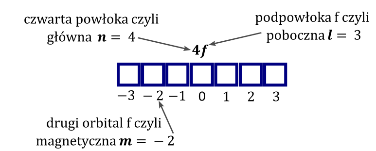
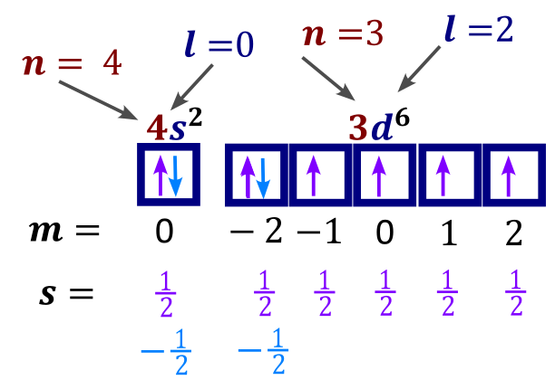
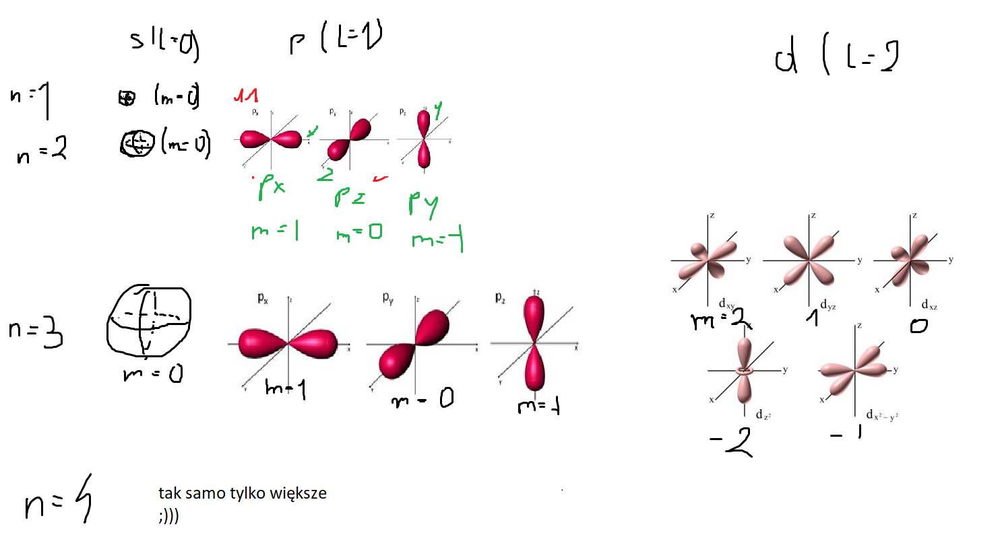

Liczby kwantowe biorą się z rozwiązania równania Schroedingera, tam jest tzw. całka potrójna czyli 3 całki (po trzech współrzędnych) i stąd te 3 liczby kwantowe. Rozwiązanie tego równanie wymaga znajomości rachunku całkowego i znacznie wykracza poza zakres liceum, natomiast ważne jest to, że trzy wymiary generują trzy liczby kwantowe dla danego orbitalu.
Dany orbital (daną kratkę w zapisie podpowłokowym) można opisać za pomocą 3 liczb kwantowych. Natomiast błędnym jest stwierdzenie, że dany pierwiastek można opisać liczbami kwantowymi.
Te trzy liczby nazywają się kolejno : główna, poboczna i magnetyczna liczba kwasntowe
Główna liczba kwantowa \(\mathbf{n}\) definiuje powłokę na której jest dany orbital.
\[n = 1 \rightarrow 1\ powłoce\ (K)\]
\[n = 2 \rightarrow 2\ powłoce\ (L)\]
Główna kwantowa zmienia się od (1... nieskończoności) i musi być całkowita. Z nieskończoności możliwych liczb kwantowych wynika, że dla danego atomu mamy nieskończenie wiele powłok. Nikt nie powiedział, że w stanie podstawowym są tam elektrony, ale mogą się tam znaleźć w stanie wzbudzonym. Od głównej liczby kwantowej zależy silnie energia danego orbitalu i jego wielkość – im większa główna liczba kwantowa tym większy orbital, znajduje się on dalej od jądra.
Poboczna liczba kwantowa \(\mathbf{l}\) definiuje rodzaj podpowłoki, na którym jest dany orbital
\[l = 0 \rightarrow podpowłoka\ s\]
\[l = 1 \rightarrow p\]
\[l = 2 \rightarrow d\]
\[l = 3 \rightarrow f\]
Poboczna liczba kwantowa zależy od wartości głównej liczby kwantowej (czyli w praktyce powłoki) i musi być całkowita, zmienia się wedle zasady \(l \in \{ 0\ldots\ n - 1\}\) i jest całkowita.
Tłumaczy to dlaczego np. dopiero dla 3 powłoki masz podpowłoke d , a nie masz jeszcze f
\[n = 3 \rightarrow dopuszczalne\ l = (0 \rightarrow s,1 \rightarrow p,2 \rightarrow d),\ \]
ale nie możliwe jest żeby przyjęłą ta l=3 czyli nie ma f
Od pobocznej liczby kwantowej zależy kształt orbitali, jak również energia danego orbitalu
Magnetyczna liczba kwantowa - definiuje orbital, w jakim jesteśmy, możemy powiedzieć, że „numer kratki” i oznacza się jako \(\mathbf{m}\) . Jej dopuszczalne wartości zależa od pobocznej kwantowej l w myśl zasady \(m \in \{ - l..0..l\}\) i musi być całkowita.
Dopuszczalne wartości jakie przyjmuje ona świetnie tłumaczą, dlaczego np. dla dowolnej podpowłoki d masz 5 orbitali, a dla s tylko jeden.
Dla podpowłoki d poboczna liczba kwantowa l wynosi 2 , więc możliwe wartości magnetycznej liczby kwantowej to \(m = - 2, - 1,0,1,2\) -> czyli mamy łączniej dopuszczalne 5 wartości, więc możliwych jest 5 orbitali czyli 5 kratek ;). Natomiast dla dowolnej podpowłoki s wartość pobocznej liczby kwantowej to 0 a to powoduje, że jedyna dopuszczalna wartość magnetycznej liczby kwantowej to \(m = 0\) więc mamy jeden orbital. Od magnetycznej liczby kwantowej zależy ułożenie w przestrzeni orbitalu oraz czasem jego kształt. Nie zależy natomiast energia danego orbitalu tzn. orbitale o tej samej głównej i pobocznej liczbie kwantowej mają tę samą energię, mimo różnej magnetycznej liczby kwantowej to, co zapisujemy jako kratki połączone w zapisie klatkowym. Ogólnie jest możliwe uzyskanie różnej energii orbitali tej samej podpowłoki w polu magnetycznym, pod warunkiem, że to pole jest dla różnicuje orbitale (np. Przez obecność jakiś cząsteczek w okolicy danego atomu), ale znacznie wykracza to ponad maturę.
Te trzy liczby powyżej definiują orbital. Może być pusty , może być zajęty czy pół zajęty, ale zamiast mówić dla np. drugim orbitalu podpowłoki f leżącej na 4 powłoce możemy łatwo ustalić liczby kwantowe:
\[\mathbf{4}\mathbf{f}\]

Dla tego orbitalu wartość głównej liczby kwantowej wynosi wynosi \(4\) , bo jesteśmy w czwartej powłoce, pobocznej l wynosi 3 bo jesteśmy na podpowłoce f oraz magnetyczna m wynosi -2,bo jesteśmy w drugim orbitalu. Należy zwrócić uwagę, że wskazanie orbitalu na zapisie klatkowym jednoznacznie definiuje jego liczby kwantowe, a podanie liczb kwantowych również jednoznacznie definiuje orbital.
Dla elektronu mamy dodatkową liczbę kwantową, która definiuje jego spin. Nazywa się ona to spinową magnetyczną liczbą kwantową. Możliwe liczby spinowe to \(+ \frac{1}{2}\) co symbolizuje strzałka do góry na zapisie kratkowym oraz \(–\frac{1}{2}\) co symbolizuje strzałka w dół.
Oczywiście podanie wszystkich czterech liczb kwantowych dla elektronu w atomie jednoznacznie definiuje, o którym elektronie mówimy, na przykład dla elektronów walencyjnych żelaza możemy powiedzieć, że konfiguracja jego to \(Fe\lbrack Ar\rbrack:4s^{2}\ 3d^{6}\) , a więc ich liczby kwantowe to

Ogólnie liczby kwantowe traktujemy tak samo jak podawanie położenia orbitali słownie , gdyż jedno jednoznacznie definiuje drugie.
W celu podania dopuszczalnych wartości liczby kwantowych należy wykorzystać zależność pobocznej liczby kwantowej od głównej i magnetycznej od pobocznej
Jeżeli mamy napisać zmienność liczb kwantowych(dopuszczalnych) to wykorzytujemy jak \(m\) zależy od \(l\) i jak \(l\) zależy od \(n\ \) .
Czy możliwy jest orbital opisany liczbami kwantowymi \(n = 3;\ l = 2;\ m = - 3\) . ?
Nie, bo wartość magnetycznej liczby kwantowej wykracza po za \(–l..l\) . Przy głównej liczbie kwantowej równej 2 poboczna może przyjmować wartości \(0,1,2\) , więc \(l = 2\ \) jest poprawne, natomiast dla pobocznej równej dwa dopuszczalne wartości magnetycznej to \(- 2, - 1,0,1,2\) więc \(- 3\) jest po za dopuszczalnym zakresem.
Powiedz ile jest maksymalnie elektronów opisanych liczbą kwantową \(m = 1\) do 4 powłoki włącznie.
\[m = - 1\]
\(n = 1\ \ l = 0\) takich nie mamy bo jedyny dopuszczalny orbital to \(m = 0\)
\[n = 2\ l = 0\ (brak);\ \ \ n = 2;l = 1;m = \left( \mathbf{- 1};0;1 \right)czyli\ jest\ 1orb \rightarrow 2e^{-}\]
\[n = 3;l = 0\ brak;n = 3\ ;l = 1\ m = \left( \mathbf{- 1};0;1 \right) \rightarrow 2e^{-}\ \ n = 3;l = 2;m = \left( - 2;\mathbf{- 1};0;1; \right) \rightarrow 2e^{-}\]
\[n = 4;l = 0\ brak;n = 4\ ;l = 1\ m = \left( \mathbf{- 1};0;1 \right) \rightarrow 2e^{-}\ \ \]
\[n = 4;l = 2;m = \left( - 2;\mathbf{- 1};0;1;2 \right) \rightarrow 2e^{-}\ \ \ n = 4;l = 3;m = \left( - 3; - 2;\mathbf{- 1};0;1;2;3 \right) \rightarrow 2e^{-}\]
\(mam\ 12e^{-}\) (6 orbitali)
Kwestia kształtów orbitali.
Kształt orbitali zależy od pobocznej liczby kwantowej (rodzaju podpowłoki, na której się znajdują) oraz dla orbitali położonych na orbitalach d i f od wartości magnetycznej liczby kwantowej (w której kratce się znajdują). Ułożenie orbitalu w przestrzeni zależy tylko od magnetycznej liczby kwantowej. Zwiększenie głównej liczby kwantowej powoduje tylko zwiększenie orbitalu, natomiast nigdy nie powoduje zmiany kształtu orbitalu.
